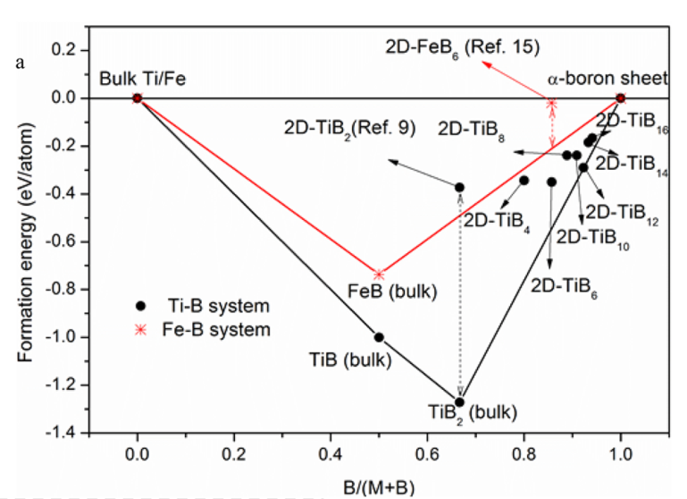

Average binding energy E_b[AB]=(N_A*E_A+N_B*E_B-E_{tot}[AB])/(N_A+N_B) where E_A and E_B are the energy of free atom in vacuum for A and B.
[1,2]Curvature energy for nanotubes E_{tube}=E_{2D}-E_{curv}=E_{2D}-A/R^2
2 Formation Energy
[3]General trend in formation energy for QD: \varepsilon(n)-\varepsilon(\infty)\propto const/\sqrt{n}
2.1 formation energy of a defect or impurity
[4]The formation energy of a defect or impurity X in charge state q is defined as E_f[X^q]=E_{tot}[X^q]-E_{tot}[GaN,bulk]-\sum\limits_i n_i\mu_i+q[E_F+E_\nu+{\Delta}V]E{tot}[X] is the total energy derived from a supercell calculation with one impurity or defect X in the cell, and E_{tot}[GaN,bulk] is the total energy for the equivalent supercell containing only bulk GaN. n_i indicates the number of atoms of type i (host atoms or impurity atoms) that have been added to (n_i>0) or removed from (n_i<0) the supercell when the defect or impurity is created, and the \mu_i are the corresponding chemical potentials of these species. E~F ~ is the Fermi level, referenced to the valence-band maximum in the bulk. Due to the choice of this reference, we need to explicitly put in the energy of the bulk valence-band maximum, E_{\nu}, in our expressions for formation energies of charged states. As discussed in Sec. II C, we also need to add a correction term DV, to align the reference potential in our defect supercell with that in the bulk.
extreme N-rich conditions: \mu_N=\mu_{N[N2]},\mu_{Ga}^{min}=E_{tot}[GaN]-\mu_{N[N2]} The total energy of GaN can also be expressed as E_{tot}[GaN]=\mu_{{Ga}[bulk]}+\mu_{N[N_2]}+{\Delta}H_f[GaN] where {\Delta}H_f[GaN] is the enthalpy of formation, which is negative for a stable compound.
2.2 Chemical Potential
The chemical potentials can in principle be related to partial pressures, using standard thermodynamic expressions. For instance, the chemical potential for hydrogen atoms in a gas of H2 molecules is given by 2\mu_H=E_{H_2}+k_BTln(\frac{pV_Q}{k_BT}-lnZ_{rot}-lnZ_{vib}) where EH2 is the energy of an H2 molecule, kB is the Boltzmann constant, T is the temperature, and p is the pressure. V_Q=(h^2/2\pi m k_B T)^{3/2} is the quantum volume, and Zrot and Zvib are the rotational and vibrational partition functions.
2.3 Helmholtz free energy[5]
From the computed phonon spectrum of the sheet configurations, the temperature-dependent vibrational Helmholtz free energy and entropy can be calculated in the harmonic approximation21. F(V,T), the free energy of a crystal, can be written as a sum of E(V), the energy of the static lattice at the equilibrium configuration, and F_{vib}(V, T), the vibrational free energy associated with the modes, \omega(q). F=E+F_{vib}=E+\sum_q\frac{\hbar\omega(q)}{2}-ST Here, S is entropy, \sum_q\frac{\hbar\omega(q)}{2} is the summation of contributions of the zero-point energy from each phonon mode, and T is the temperature.
Considering the first-order corrections to be small, S can be calculated20 as follows: S=-k_B\sum_q ln(1-\exp(-\hbar\omega(q)/k_BT)) The lattice heat capacity per unit cell at constant volume can be defined as follows: C_V(T)=\sum_q{c_v(q)}=k_B\sum_q{({\hbar}{\omega}(q)/2K_BT)^2/sinh^2({\hbar}{\omega}(q)/2K_BT)}
2.4 Formation Valley[6]
Fig. 1:
Formation energies per atom (Ef) for 2D TiBx-multilayers. E_f=(E_{TiB_x}-E_{Ti}-xE_B)/(x+1) from alloy, bulk Ti and \alpha sheet.
2.5 Surface Energy
Thick engough，surface energy \gamma vs. thickness convergence test needed
\gamma=\frac{E_{slab}-N*E_{bulk}}{2A}, where E_{slab} is the total energy of surface slab obtained using density functional theory. N is the number of atoms in the surface slab. E_{bulk} is the bulk energy per atom. A is the surface area. For a slab, we have two surfaces and they are of the same type, which is reflected by the number 2 in the denominator. To guarantee this, we need to create the slab carefully to make sure that the upper and lower surfaces are of the same type.
[1]
Tibbetts, G. G. Why Are Carbon Filaments Tubular? J. Cryst. Growth1984, 66, 632–638.
[2]
Speck, J. S.; Endo, M.; Dresselhaus, M. S. Structure and Intercalation of Thin Benzene Derived Carbon Fibers. J. Cryst. Growth1989, 94, 834–848.
[3]
Singh, A. K.; Penev, E. S.; Yakobson, B. I. Vacancy Clusters in Graphane as Quantum Dots. ACS Nano2010, 4, 3510–3514.
[4]
Van de Walle, C. G.; Neugebauer, J. First-Principles Calculations for Defects and Impurities: Applications to III-Nitrides. J. Appl. Phys.2004, 95, 3851–3879.
[5]
Lau, K. C.; Pandey, R. Thermodynamic Stability of Novel Boron Sheet Configurations. J. Phys. Chem. B2008, 112, 10217–10220.
[6]
Wang, J.; Khazaei, M.; Arai, M.; Umezawa, N.; Tada, T.; Hosono, H. Semimetallic Two-Dimensional TiB12: Improved Stability and Electronic Properties Tunable by Biaxial Strain. Chem. Mater.2017, 29, 5922–5930.